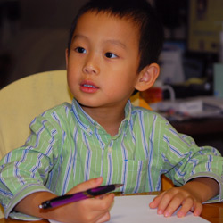
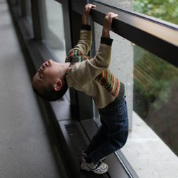
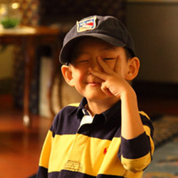

Ronald writing fun stuff
Skiing on the Moon
If I could fly...
What would you wish for if you had the chance?
Would you rather befriend an alien, or a monster?
I was going to Mars by a rocket ship. I had to get all my stuff loaded onto my rocket, such as, my skis, my snowboard, my warm clothes, my air tanks, my boots, my poles, a flag, and my space helmet. It was tiring. I walked back and forth. I thought the heavy work was worth it because I was planning to go to Mars. But my plan went wrong and I ended up landing on the moon. I thought it was pretty boring but then I saw some moon rocks and quite big craters. And over the distance I saw a ski resort! I was absolutely stunned. I quickly got my skis and started skiing. I had a great time, especially since there is little gravity, I soared up super high. It was awesome. I hope I can go there again.
[ ∧ ]
I would fly to many places I haven't been to, like Egypt and Ottawa. I could make new friends and teach them games they don't know. It would be so fun to feel the clouds on my hand and on my face. Maybe it's moist, maybe it's hollow. Who knows? If I ever got to fly, I would feel how clouds feel like. I would also be able to boost my speed to get me to places faster and also I could land without getting hurt or injured. My friends would think I'm going crazy, but then I would prove to them I could actually fly.
[ ∧ ]
I would want a hamster because they are cute, cuddly, and entertaining. Also when they nibble on food, they are so adorable. It's so much fun to watch them running on the wheel. Although puppy is cute too, I think I am not old enough to take care of a puppy. But I am old enough to take care of a hamster.
My second wish is I would want lots of fun books because I love reading fun books. They entertain me and help me imagine and ask questions, like "how did they do that?" or "why did they do that?" etc.
My third wish is I would want a time traveler, so that I could go back in time and forward in time, so that I could tell people what I saw in the past and what I saw in the future.
[ ∧ ]
I would rather befriend an alien because I think they are much more powerful. They are bigger and have a strong home. I saw a UFO on National Geographic channel. Also I think they might have a secret call to their friends for help and they work in teams. For example, in a movie aliens called for help and they came. But movies with monsters, the monsters work alone. So if a monster attacks an alien, the alien can go into its UFO and fire lasers and bullets at the monster. It's great to have a strong home to defend yourself and fight back. That is why I want to befriend an alien.
[ ∧ ]

Ronald enjoying himself
At age 3 -
"Mommy, if you use too much paper, you will have to cut down more trees."
Mom: "It's raining..."
Ronald: "Yeah, the rain knows flowers needs water. They need to grow."
"Mommy, when you grow old, I will take care of you, I will cook for you, I will wash dishes for you, I will do cleaning for you, and you will sit in my car seat, I will drive for you."
"What if policemen ran out of gas when they were chasing bad guys?"
Ronald's observation at such a young age -
"Mom, does tree grow in mud or in grass?"
"The highway road is a smooth one."
At age 4 -
Ronald was singing 10 little monkeys jump in the bed...
Mom: "What happened in the end?"
Ronald: "All monkeys came back."
Mom: "How come?"
Ronald: "They all got band-aid from doctor".
At age 5 -
Can you believe a five year old said this? "When good friends are gone, you shouldn’t say you feel sad because they will come back. That’s what good friends are for."
At age 6 -
"If a person is invisible, he can walk through anything."
"Mommy, possibilities are endless, right?"
Mom: "The computer is too slow."
Ronald: "You feel like smashing it?"
Mom: "Yeah..."
Ronald: "Then why don't you just put the computer down and let me jump on it?"
At karate class -
Sensei: "Let's see who has the best horse-standing...lower, lower...seems Yanif has the best horse-standing."
Ronald: "Oh, that's because he is the smallest kid in class."
At age 7 -
Seeing Ronald doing great on his Chinese work, I said to him, "Ronald, you can actually learn Chinese much better than you think."
"Oh, that's like Scotia Bank's message - you are richer than you think."
It was raining hard. I said to Ronald, "look, the rain is washing our windows so clean."
"Yeah, that's why heavy rain is called shower."

Ronald being silly
“Ronald, what is catfish?”
“It’s a cat swimming in the water.”
“Mommy, is Maryland the place where people get married?”
“Ronald, what is that thing on your T-shirt?” I pointed the Polo logo on his T-shirt.
“Oh, it’s just a giraffe. They forgot to put spots on.”
“Mommy, do seahorses change color when they love each other?”